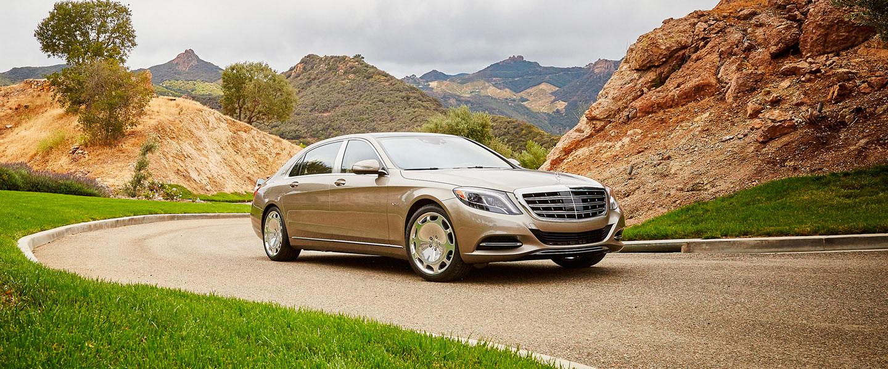

CAR
Clicking here take you to SPORT'S PAGE

Description :-
Maybach Motorenbau (German pronunciation: [ˈmaɪ.bax][1]) was a German car manufacturer. The company was founded in 1909 by Wilhelm Maybach and his son, originally a subsidiary of Luftschiffbau Zeppelin GmbH and was itself known as Luftfahrzeug-Motorenbau GmbH until 1912.
EARLY HISTORY
Wilhelm Maybach was technical director of the Daimler-Motoren-Gesellschaft (DMG) until he left in 1907. On 23 March 1909 he founded the new company, Luftfahrzeug-Motorenbau GmbH (literally "Aircraft Engine Building Company"), with his son Karl Maybach as director.[citation needed] In 1912 they renamed it to Maybach-Motorenbau GmbH ("Maybach Engine Construction Company"). The company originally developed and manufactured diesel and petrol engines for Zeppelins, and then rail cars. Its Maybach Mb.IVa was used in aircraft and airships of World War I.
MODELS:-
- 2014 Mercedes-Maybach S600

- 2015 Mercedes-Maybach S500

- 2015 Mercedes-Maybach S600 Pullman

- 2018 Mercedes-Maybach G 650 Landaulet

WEBSITE:-
Open the Website